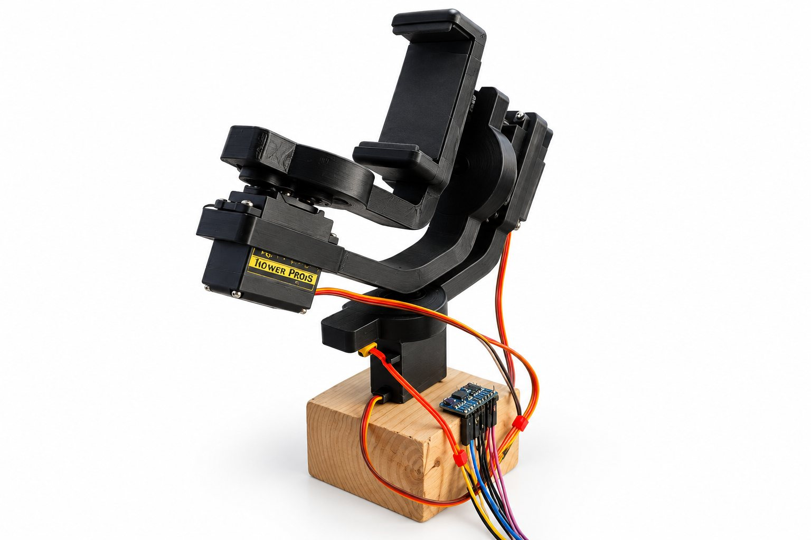
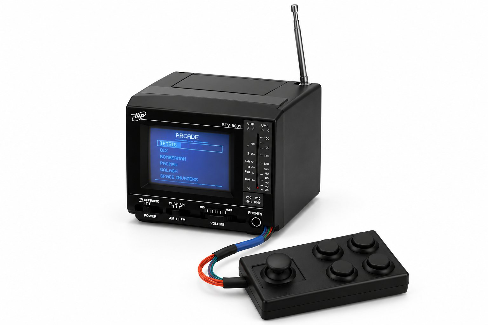
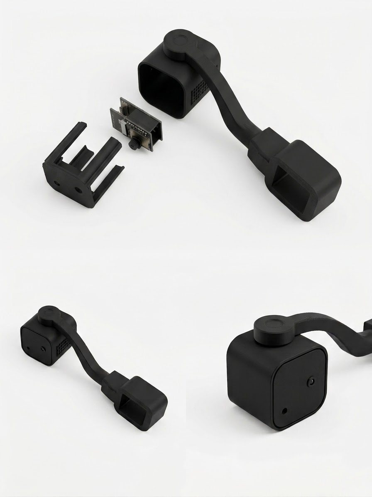
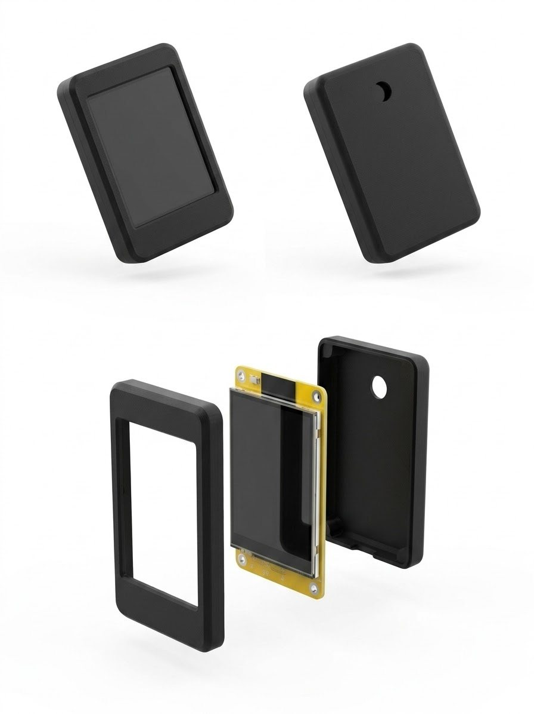
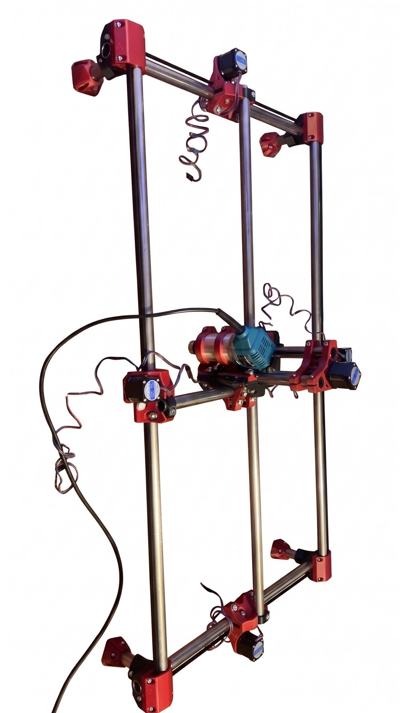

Robotics
2026Mikrocontroller, Sensoren, Motoren und Gehäuse aus dem eigenen 3D-Drucker. Fünf Builds, vom Spotify-Controller bis zur selbst gebauten CNC-Fräse.



Hinweis: Die Fotos auf dieser Seite wurden mit KI freigestellt. Kleine Details können deshalb minimal vom echten Aufbau abweichen.
- Rolle
- Konstruktion, Elektronik, Firmware
- Team
- Allein, die CNC mit meinem Bruder
- Kontext
- Hobby, seit Sommer 2026
- Werkzeuge
- PlatformIO · VS Code · Kobra Neo
Im HRI-Modul habe ich einen Roboter programmiert. Danach wollte ich verstehen, wie man so etwas selbst baut.
Seitdem entsteht ein Projekt nach dem anderen. Jedes ist ein Stück größer als das davor: erst ein Display mit WLAN, dann eine Kamera, dann Ton und Eingabegeräte, dann Sensoren und Motoren, die in Echtzeit zusammenspielen müssen. Die Gehäuse und Halterungen konstruiere ich selbst und drucke sie auf meinem 3D-Drucker.

Spotify-Controller
Ein kleiner Touch-Bildschirm auf dem Schreibtisch, der zeigt, was gerade läuft, und die Musik steuert, ohne dass ich zum Handy greifen muss.
Herzstück ist ein sogenanntes Cheap Yellow Display: ein ESP32, auf dessen Platine direkt ein 2,8-Zoll-Touchdisplay sitzt. Es verbindet sich mit dem WLAN und spricht über die Spotify Web API mit meinem Account. Läuft irgendwo auf einem meiner Geräte Musik, holt es sich den aktuellen Titel und schickt meine Eingaben als Befehle zurück.
Die Oberfläche habe ich bewusst flach und reduziert gestaltet. Wenn nichts läuft, schaltet der Bildschirm auf einen Screensaver mit animierten Roboteraugen. Das Gehäuse ist selbst konstruiert: Rahmen, Rückschale und Ausschnitt für die Platine, passgenau gedruckt.
- Board
- ESP32-2432S028 („Cheap Yellow Display“)
- Software
- PlatformIO · TFT_eSPI · Spotify Web API
- Gehäuse
- Selbst konstruiert, 3D-gedruckt
Druck-Kamera
Lange Drucke laufen oft stundenlang. Mit dieser Kamera sehe ich vom Handy aus, wie weit der Druck ist und ob alles sauber läuft.
Eine ESP32-CAM sitzt in einem eigenen Gehäuse an einem geschwungenen Arm. Die Halterung wird einfach auf die Querachse meines 3D-Druckers gesteckt, so fährt die Kamera mit und bleibt immer auf die Düse gerichtet. Ohne Schrauben, ohne den Drucker umzubauen.
Der ESP verbindet sich mit dem Heimnetz und startet einen kleinen Webserver. Über dessen Adresse und Port öffne ich im Handy-Browser eine Seite mit dem Live-Bild. Eine App braucht es dafür nicht.
- Board
- ESP32-CAM
- Software
- PlatformIO, eigener Webserver mit Live-Stream
- Drucker
- Anycubic Kobra Neo
- Gehäuse
- Steckhalterung für die X-Achse, selbst konstruiert
Arcade-Konsole
Ein altes LKW-Radio mit Fernseher, das jetzt Tetris und Snake spielt. Mit Joystick, vier Tasten und dem originalen Lautsprecher.
Das Gerät lief noch mit einer Bildröhre, die Elektronik war nicht mehr zu retten. Also habe ich alles ausgebaut und nur den Lautsprecher behalten. An die Stelle der Röhre kam ein 3,5-Zoll-Touchdisplay, gesteuert von einem ESP32-S3 mit viel Speicher für Grafik und Spiele. Ein I²S-Mono-Verstärker treibt den alten Lautsprecher an, so klingt die Konsole aus dem Original-Gehäuse.
Den Controller habe ich selbst gebaut: ein analoges Joystick-Modul und einfache Taster, die durch gedruckte Kappen und ein eigenes Gehäuse zu richtigen Arcade-Buttons werden. Die Spiele sind selbst geschrieben, kein Emulator.
- Board
- ESP32-S3 (N16R8, 16 MB Flash, 8 MB PSRAM)
- Display
- 3,5″ TFT-Touch, ILI9488
- Audio
- MAX98357A an Original-Lautsprecher
- Eingabe
- Joystick KY-023, 4 Taster mit gedruckten Kappen
- Software
- PlatformIO, eigene Spiele wie Tetris und Snake
3-Achsen-Gimbal
Ein Handy-Gimbal, der das Bild über drei Achsen ruhig hält. Inspiriert von den Gimbals von DJI, aber komplett selbst konstruiert.
Das Gestell habe ich so ausgelegt, dass drei Servos mit Metallgetriebe die Achsen für Neigen, Rollen und Schwenken direkt tragen. Ein ESP32 liest die Lage des Handys aus einem Sensor und regelt die Servos so nach, dass sie jede Bewegung ausgleichen. Die eigentliche Herausforderung war dabei nicht die Mechanik, sondern der Sensor.
MPU-60506 Achsen
Beschleunigung und Drehrate allein reichen für Neigen und Rollen. Für das Schwenken fehlt aber ein fester Bezug, die Richtung driftet mit der Zeit weg.
+ GY-271Magnetometer
Ein zusätzlicher Kompass sollte die Drift korrigieren. Die beiden Sensoren sauber zusammenzurechnen, hat aber nicht zuverlässig funktioniert.
BNO0809 Achsen
Beschleunigung, Drehrate und Magnetfeld in einem Modul, das die Sensorfusion selbst übernimmt und direkt eine stabile Lage liefert. Damit funktioniert es.
Als Nächstes fehlt ein richtiges Gehäuse, das Elektronik und Kabel aufnimmt. Das war für den aktuellen Stand noch ein Schritt zu viel und ist gerade in Arbeit.
- Controller
- ESP32
- Software
- PlatformIO, eigene Servo-Regelung
- Antrieb
- 3 × MG996R, Metallgetriebe, 180°
- Sensor
- BNO080, 9-Achsen-IMU mit Sensorfusion
- Gestell
- Eigene Konstruktion, auf die Servos zugeschnitten

MPCNC-Fräse
Eine CNC-Fräse, Schraube für Schraube selbst aufgebaut. Fast alle Verbindungsteile kommen aus dem 3D-Drucker.
Die MPCNC, kurz für „Mostly Printed CNC“, ist ein Open-Source-Projekt von V1 Engineering. Der Rahmen besteht aus Stahlrohren, die von gedruckten Eckstücken und Schlitten zusammengehalten werden. Schrittmotoren bewegen die Achsen, als Spindel dient eine Oberfräse. So entsteht für einen Bruchteil des Preises einer fertigen Maschine eine Fräse, die Holz und Kunststoff bearbeiten kann.
Mein Bruder und ich bauen sie gemeinsam von Grund auf: Teile drucken, Rohre zuschneiden, Mechanik ausrichten, Motoren verkabeln. Ein Projekt, bei dem Genauigkeit wirklich zählt, denn jeder Millimeter Spiel im Rahmen landet später im Werkstück.
- Projekt
- MPCNC, Open Source von V1 Engineering
- Rahmen
- Stahlrohre mit 3D-gedruckten Verbindern
- Antrieb
- Schrittmotoren, Oberfräse als Spindel
Was sich durch alle Builds zieht
- Mikrocontroller
- ESP32 · ESP32-S3 · ESP32-CAM, programmiert mit PlatformIO
- Sensorik
- IMUs, Magnetometer, Kamera, Touch
- Aktorik
- Servos, Schrittmotoren, Audio
- Fertigung
- CAD, 3D-Druck, Löten
Was als Nächstes kommt
- Gimbal-GehäuseElektronik und Kabel sauber verpacken, damit der Gimbal in die Hand passt.
- Gimbal-SteuerungEin Joystick, um die Kamera gezielt zu schwenken, statt nur zu stabilisieren.
- Erste FrästeileDie MPCNC fertig aufbauen, kalibrieren und die ersten Teile fräsen.